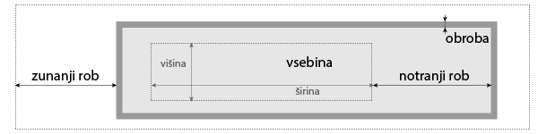

Oblikovanje HTML dokumentov s CSS#
CSS (angl. Cascading Style Sheets) je jezik, s katerim lahko predpišemo izgled spletne strani. S HTML ustvarimo strukturo spletne strani: besedilo, naslove, gumbe, slike in tabele, s CSS pa določimo barve, pisave, postavitev, velikosti in druge vizualne lastnosti elementov na strani.
Jezika HTML in CSS sta primer ločevanja vsebine in predstavitve. Po tem načelu se vizualni in oblikovni vidiki (predstavitev in slog) ločijo od osnovnega materiala in strukture (vsebine) dokumenta.
Različni brskalniki imajo različne načine za prikazovanje nekaterih elementov spletnih strani. Zato skoraj vse spletne strani najprej uporabijo CSS, ki poenoti prikazovanje elementov. Take CSS datoteke skoraj nihče ne naredi od začetka, ampak se uporabi eno od že obstoječih, kar bomo naredili tudi mi. V resnici se ponavadi uporabi kar eno od obstoječih ogrodij za izdelavo spletnih strani (npr. Bootstrap).
Programska oprema
razširitev HTMLHint in
razširitev HTML Preview.
Shranite vaje na strežnik
Na koncu vsake naloge zabeležite spremembe.
Če naloge slučajno ne končate na vajah, vseeno zabeležite spremembe -
v sporočilo napišite na primer V delu: ... s kratkim opisom narejenega.
Preden odidete iz predavalnice,
pošljite spremembe na strežnik s paleto ukazov:
Ctrl+Shift+P (🍎 Cmd+Shift+P) >
Git: Push.
Osnovni pojmi in orodja#
Glavni gradniki jezika CSS so deklaracije, ki so sestavljene iz lastnosti in vrednosti za to lastnost.
Sintaksa deklaracije zgleda takole: ⟨lastnost⟩: ⟨vrednost⟩;
(na podpičje na koncu deklaracije je lahko pozabiti, ampak se nikoli ne konča dobro).
Primeri:
font-size: 12px;color: #FFFF00;
Deklaracije sestavimo v bloke (tako da jih obdamo z zavitimi oklepaji) in jim dodamo izbiralce, ki določajo, na katerih elementih se bodo uporabile deklaracije:
h1 {
font-size: 12px;
color: #FFFF00;
}
V zgornjem primeru določimo vsebini vseh značk velikost in barvo pisave. Nekoliko poenostavljeno lahko rečemo, da je css datoteka sestavljena iz blokov deklaracij z izbiralci.
Prav vam bodo prišli spodnji enostavni izbiralci (zadnjo vrsto, gnezdenje, smo izpustili).
Izbiralec za značke
⟨znacka⟩(angl. type selector) izbere vse značkeznackav dokumentu (kot zgoraj za značkoh1).Izbiralec za atribute (angl. attribute selector) ima več oblik, tu omenimo samo dve najenostavnejši:
[⟨atribut⟩]izbere vse značke v dokumentu, ki imajo atributatribut,[⟨atribut⟩=⟨vrednost⟩]izbere vse značke v dokumentu, ki imajo atributatribut, z vrednostjovrednost.
Izbiralec za razrede
.⟨razred⟩(angl. class selector) izbere vse značke v dokumentu, ki imajo atributclassz vrednostjorazred.Izbiralec po identifikatorju
#⟨id-elementa⟩(angl. ID selector) izbere natanko tisto značko v dokumentu, ki ima atributidz vrednostjoid-elementa.Univerzalni izbiralec
*(angl. universal selector), ki izbere vse značke v dokumentu.
Enostavne izbiralce lahko združimo v sestavljene izbiralce, tako da jih staknemo brez presledkov;
pri tem moramo paziti na to, da najprej napišemo izbiralec za značke ali univerzalni izbiralec.
Primer: p.poudarjeno združi izbiralca p in .poudarjeno:
izbere vse značke p (za odstavke), ki imajo določen atribut class z vrednostjo poudarjeno.
Izbiralce se da sestavljati v kompleksne izbiralce s t.i. kombinatorji, vendar tu omenimo le dva enostavna primera; za kaj več si poglejte dokumentacijo.
Potomce izbiramo s kombinatorjem
li aizbere vse povezave (a), ki so v elementih seznama (li).Z vejico
,združimo več izbiralcev v enega: izbiralech1, h2izbere vse značkeh1inh2.
Včasih pridejo prav tudi t.i. psevdo-razredi, s katerimi izbiramo elemente, ki imajo posebno stanje.
Ponavadi jih uporabimo tako, da jih pritaknemo na koncu izbiralca.
Primer: elemente, nad katerimi je miška, izberemo s :hover.
Tako lahko npr. izberemo vse povezave, nad katerimi je miška (a:hover), da jim spremenimo barvo.
Škatlasti model#
Že prejšnji teden smo omenili, da si lahko HTML značke (elemente spletne strani) predstavljate kot škatle, ki držijo vsebino in druge škatle. Ta analogija pride prav tudi pri oblikovanju elementov. Vsak element strani, recimo odstavek ali slika, je obravnavan kot škatla ali okvir, ki je sestavljena iz štirih glavnih delov:

Fig. 5 Škatlasti model#
Slovarček#
Slovarček slovenskih v angleške izraze za boljšo preglednost:
zunanji prazen prostor: angl. margin,
notranji prazen prostor: angl. padding,
obroba oz. rob: angl. border,
višina: angl. height,
širina: angl. width.
Dodatni viri:
Merske enote#
Velikosti in razdalje na spletnih straneh podajamo bodisi z absolutnimi enotami bodisi z relativnimi enotami. Primeri:
točke na zaslonu:
200pxpomeni točno 200 točk na zaslonu.Enota em:
2empomeni 2-krat velikost pisave: v primeru določanja velikosti pisave glede na velikost pisave na enem nivoju višje (če pa ta ni določena, pa glede na privzeto velikost pisave v brskalniku), v primeru določanje širine elementa pa glede na velikost pisave v elementu.Še ena relativna enota, ki se pogosto uporablja, je
%. Pri pisavah se obnaša podobno kotem(200%je enako kot2em). V primeru določanje širine elementa se računa glede na širino elementa na enem nivoju višje.
Več o tem boste izvedeli tudi pri posameznih nalogah in v dodatnih virih:
Osveževanje spletne strani#
Včasih želite brskalniku povedati, naj ponovno naloži datoteke. Temu rečemo osveževanje oz. po angleško refresh. Bližnjice so:
Windows: Ctrl+R ali F5,
MacOS: Cmd+R.
CSS datoteke v brskalniku pogosto pristanejo v predpomnilniku (angl. cache), kar pomeni, da se ne naložijo na novo ob vsakem osveževanju strani. Brskalnik lahko prisilimo, da jih osveži, s t.i. hard refresh. Bližnjice so:
Windows: Ctrl+Shift+R,
MacOS (Chrome, Firefox): Cmd+Shift+R,
MacOS (Safari): Cmd+Option+E (oz. Develop > Empty Caches).
1. naloga: dodajanje pravil za oblikovanje v dokument#
V VSCode odprite imenik s svojim repozitorijem. V njem naredite nov imenik
04-cssin vanj shranite arhivcss.zip. Arhiv odpakirajte (če to naredi novo mapo, prestavite datoteke v imenik04-css).Na spletu poiščite
normalize.cssin datoteko prekopirajte v imenik04-css.CSS vključite v HTML dokument v glavi z značko
<link rel="stylesheet" href="ime_datoteke.css">. V brskalniku poglejte, če je kaj razlike med HTML dokumentom z vključenim CSS-jemnormalize.cssin brez vključenega CSS-ja.V HTML dokumentu za
normalize.cssvključite še priloženo datotekooblikovanje.css, ki jo boste v nadaljevanju dopolnili. V brskalniku poglejte, kaj je drugače zdaj, ko ste vključili to datoteko.Zabeležite spremembe: dodajte vse nove datoteke v imeniku
04-csster napišite uporabno sporočilo, npr.Pripravi datoteke za CSS.
2. naloga: oblikovanje dokumenta#
V datoteki
oblikovanje.cssdodajte deklaracijo za nasloveh1, v katerem določite barvo pisave, npr. na#330066.Na strani The standard CSS box model je lep diagram robov okrog elementov:
paddingje prazen prostor med robom elementa in vsebino,borderje rob, ki mu lahko določimo npr. širino, stil in barvo,marginprazen prostor na zunanji strani roba. Naslovomh2določite prostor nad zgornjim robom (margin-top) na2em, zgornji rob naj bo širok1px, barve#AAAAAAin stilasolid. Notranji prazen prostor zgoraj naj bo visok0.5em.Prvi razdelek bomo oblikovali malo drugače kot ostale tri. Znački
sectiondodajte atributidz imenom, na katerega se boste sklicevali, npr.uvod. V HTML dokumentu ne smeta imeti dva elementa enakegaid.V
oblikovanje.cssza elementuvodnapišite izbiralec (selektor)#uvodz deklaracijami za notranji prostor (padding) širine2emna vseh stranicah in barvo ozadja (background-color)rgb(51, 0, 102, 0.1). Tu so prve tri številke vrednosti za rdečo, zeleno in modro med 0 in 255, zadnja pa prosojnost med 0 (povsem prosojno) in 1 (neprosojno, privzeta vrednost).#uvod { ... }V datoteko
oblikovanje.cssdodajte deklaracijo za rdeč rob (poiščite na spletu, kako) zadiv. Nastaviti boste morali tudi debelino črte. V brskalniku poglejte, kje se pojavijo rdeči robovi. Rob smo dodali zato, da vidimo, na kaj vse bomo z novim oblikovanjem vplivali oz. kaj zajame izbiralecdiv. Ko bodo stvari v izbranihdiv-ih dokončno oblikovane, bomo rob odstranili.Značka
div(iz angl. division) se pogosto uporablja za združevanje elementov, tako je tudi tu. Oblikovali bomo oba elementadiv, ki vsebujeta sliki, zato jima dodamo atributclassz vrednostjo npr.slika. V CSS datoteki popravitediv { ... }v.slika { ... }. Zdaj bi se moral rdeč rob risati le še okrog slik. Deklaracijo za rob zdaj lahko izbrišete. Dodajte deklaracijo za velikost pisave0.9emin širino40%. V brskalniku zdaj lahko preverite, da se širina slike še ni zmanjšala (širina slike prisili v večjo širino element, ki jo vsebuje). Tako ozko besedilo ne izgleda dobro obojestransko poravnano, zato spremenitetext-alignvleft.Če dva izbiralca ločimo s presledkom, npr.
.slika img, bomo določali lastnosti za vse elemente, ki jih ujame drugi izbiralec, ki so gnezdeni v elementih, ki jih ujame prvi izbiralec. V našem primeru to pomeni vse značkeimg, ki se nahajajo v elementu z atributomclass="slika"Širino slike (width) nastavite na npr.100%(širina starša), višino (height) pa naauto. Slednje povzroči, da se bo ohranilo razmerje med višino in širino slike.Želimo, da se besedilo oblije okrog slik. To naredimo tako, da pri
.slikadodamo deklaracijofloat: right. Deklaracijafloat(in njej sorodnaclear) je širše uporabna tudi pri bolj zapletenih postavitvah spletnih strani, kar pa pošteno presega okvire tega predmeta. Poglejte, kaj se je zgodilo v brskalniku. Da bo malo lepše, pri.slikadodajte še deklaracijomargin-left: 2em.V brskalniku pri orodjih za izvajalce poiščite CSS. Večina orodij te vrste vam bo pustila na licu mesta urejati izvorno kodo (tako HTML kot tudi CSS). Preizkusite, kako to izgleda na kakem primeru. V Chromu in Safariju je to v zavihku Sources (lahko tudi še kje drugje).
Zabeležite spremembe: dodajte datoteke v imeniku
04-css, ki ste jih spremenili ter napišite uporabno sporočilo, npr.Dopolni CSS.
3. naloga: naprednejše oblikovanje#
Spodnji primeri ilustrirajo del stvari, ki jih lahko naredite s CSS. To vsekakor ni izčrpen seznam. Če vas zanima, kako se nekaj naredi s CSS, boste skoraj gotovo rešitev našli na spletu.
Zadnjemu odstavku v
.slikazmanjšamo velikost pisave tako, da pritaknemo pseudo-class:last-childzap, takole:.slika p:last-child. S tem izberemo vse elementep, ki so gnezdeni v elementu zclass="slika", ki so med vsemipv njem zadnji. Ok bi moralo biti npr.0.8em. Če niste prepričani, da dela ok, uporabite kako zelo očitno deklaracijo (background-color: #cc0000;). Zmanjšajte tudi prostor nad odstavkom. Splošnejša oblika jenth-child, s katero lahko izbiramo tudi sode ali lihe elemente.Psevdo-element
::beforelahko uporabimo, da pred vsako povezavo dodamo nek znak (poglejte primer v dokumentaciji).Z deklaracijo
border-radiusdoločimo zaobljene robove. Kaj se zgodi, če slikama nastavite zaobljenost robov na50%?Zabeležite spremembe: dodajte datoteke v imeniku
04-css, ki ste jih spremenili ter napišite uporabno sporočilo, npr.Dopolni CSS.
Domača naloga#
Na svojem GitHub repozitoriju dodajte dostop uporabniku
ul-fmf-botpo navodilih v GitHub dokumentaciji.Rešite HTML in CSS nalogo, da dobite občutek, kako bodo izgledale naloge na izpitu. Na pravem izpitu bo morda naloga nekoliko težja, ker boste že več znali. Nalogo poskusite rešiti v največ pol ure.
Vse tri datoteke (
avatar.jpg,dokument.htmlinoblikovanje.css) stisnite v arhiv z imenom⟨ime⟩-⟨priimek⟩.zip(ustrezno popravite; če imate v imenu ali priimku kak presledek, ga nadomestite z vezajem-) in ga oddajte na učilnico do ponedeljka, 11. novembra 2024, ob 23:55.Namestite LaTeX na svoj računalnik. Če ga uporabljate tudi na vajah, vam toplo priporočamo, da ga poskusite namestiti pred naslednjimi vajami. Pri LaTeX-u gre namreč rado kaj narobe, tako boste lahko prosili za pomoč, preden ga boste rabili čez dva tedna.
Točka za domačo nalogo se vam bo upoštevala, če boste pravočasno oddali pravilno poimenovan arhiv s pravimi datotekami (točka 2).
Pregledali bomo nekaj domačih nalog ter nekaj oddanih nalog. Glavni namen tega je, da dobite povratne informacije.